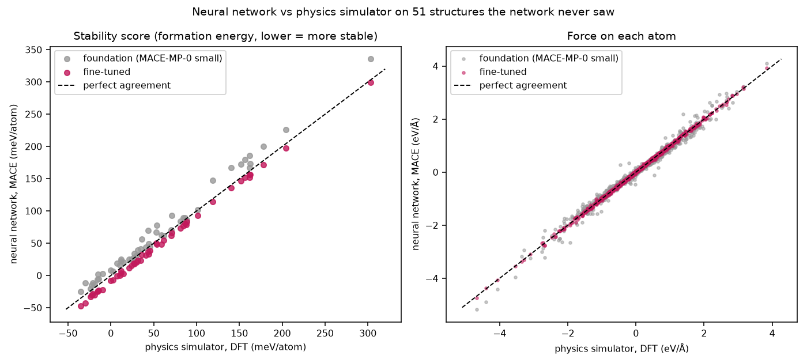
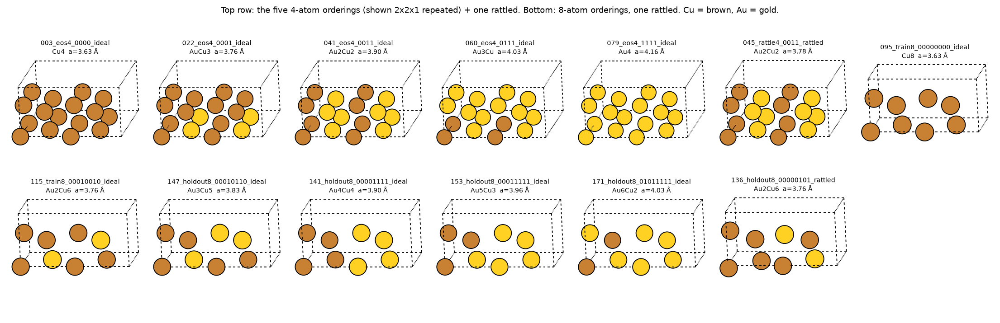
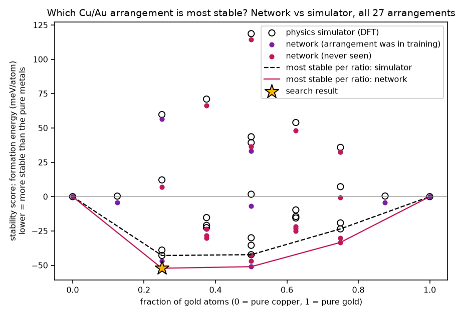
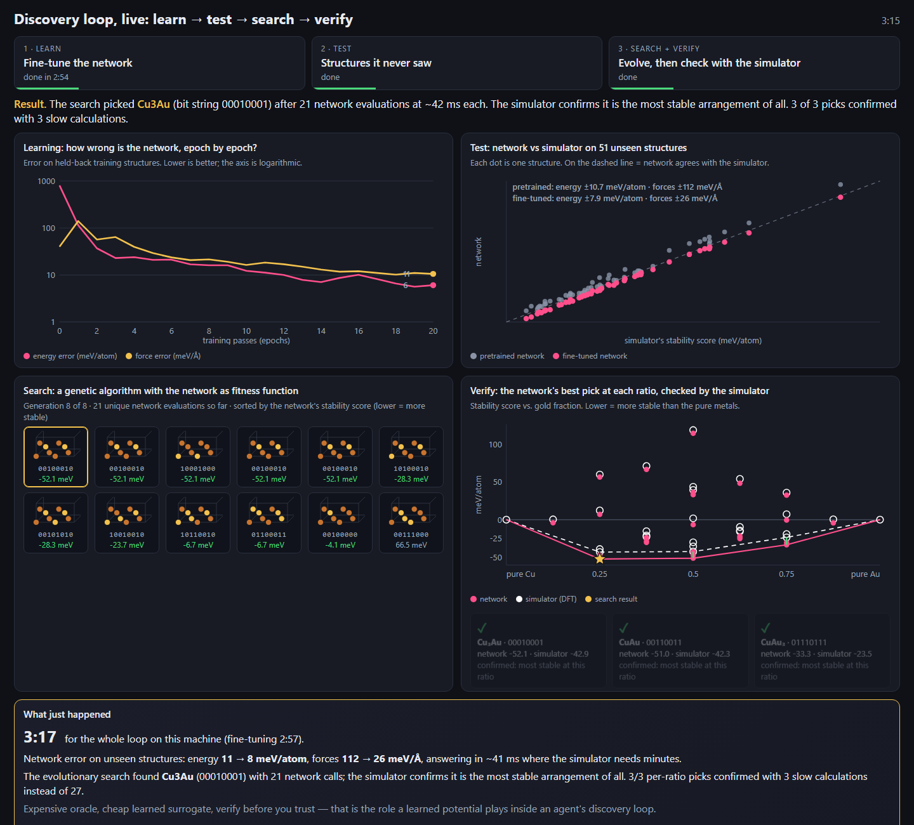

Almost every materials property follows from one function: the potential energy of a set of atoms as a function of their positions and species, E(r1…rN, Z1…ZN), and its gradient, the forces. Which crystal structure forms, whether an alloy orders or separates, how atoms move at temperature, how an electrode swells — all of it is this function evaluated many times. The whole field is a trade-off between how accurately you compute it and how many times you can afford to.
| Method | How it gets the energy | Cost per evaluation | Accuracy / transferability |
|---|---|---|---|
| Quantum mechanics (DFT) | Solves for the electrons | Minutes to hours | High; first principles; works for any element |
| Classical force fields (Lennard-Jones, EAM) | Hand-written formula with fitted parameters | Microseconds | Low outside what it was fitted to; often qualitatively wrong for new chemistry |
| Machine-learned potentials (MACE) | Neural network trained to reproduce DFT | Milliseconds | Near-DFT inside its training distribution; must be checked outside it |
The exact description of electrons in a material is the many-electron Schrödinger equation: a wavefunction of 3N coordinates for N electrons, hopeless to solve directly beyond a handful of electrons. Density functional theory (Hohenberg & Kohn 1964; Kohn & Sham 1965; Kohn's 1998 Nobel Prize) proves that the ground-state energy is a functional of the electron density n(r) — a function of just three coordinates — and recasts the problem as non-interacting electrons moving in an effective potential that depends on the density itself. The equations are solved iteratively until density and potential agree: the self-consistent-field (SCF) loop. Our EDIFF = 1e-6 is the convergence threshold of that loop.
Everything is exact except the exchange–correlation functional, the term capturing how electrons avoid each other. Its exact form is unknown; the standard approximations are LDA and GGA. We used PBE (Perdew, Burke, Ernzerhof 1996), the most common GGA for solids, and the functional behind the Materials Project and therefore behind the MACE foundation model. Our DFT and the pretrained network speak the same dialect — relevant later.
| Term | Meaning | Ours |
|---|---|---|
| VASP | The DFT code (plane-wave, periodic) | 6.3.2 on TAMU HPRC Grace |
| PAW / POTCAR | Core electrons frozen; only valence electrons treated | PBE Cu, Au, 11 valence e− each |
| ENCUT | Plane-wave basis cut-off: resolution of the wavefunctions | 400 eV |
| k-points | Sampling of the periodic crystal's Brillouin zone; metals need dense meshes | Γ-centred 8×8×8 (4-atom cells), 4×8×8 (8-atom) |
| ISMEAR / SIGMA | Smearing of the Fermi surface so metals converge | Methfessel–Paxton, 0.1 eV |
| Single point (NSW = 0) | Energy and forces at a fixed geometry, no relaxation | All 186 calculations |
Why fixed geometries: the demo compares MACE and DFT on identical structures, so nothing about relaxation paths can confuse the comparison. A research study would relax each candidate.
Treat E(positions, species) as a regression target: run DFT on a few hundred to a few thousand representative structures, then train a model to reproduce their energies and forces. Three design principles make it work:
Atoms are nodes in a graph; edges connect atoms within the cut-off. In each layer every atom collects "messages" from its neighbours describing their relative positions and species, updates its own feature vector, and after the last layer a readout maps each atom's features to an atomic energy. Sum the atomic energies for the total; differentiate for forces.
MACE-MP-0 (Batatia et al. 2023) is a MACE trained on about 1.5 million structures from Materials Project relaxation trajectories — 89 elements, PBE. It is a general-purpose potential: load it and run almost any inorganic material zero-shot. We used the small variant (128 channels, scalar features), the fastest. Zero-shot accuracy is impressive for a universal model and modest for any specific task — the gap fine-tuning closes.
Start from MACE-MP-0's weights and architecture. Fit per-element reference energies (E0s) to our data by least squares so the absolute energy scale of our DFT matches. Minimise 100·(energy error per atom)² + 10·(force error)² with Adam (learning rate 0.01, exponential moving average of weights) for 20 epochs over 135 structures (122 train / 13 validation). The 100:10 weighting is deliberate: MACE's default is 1:100, which fits forces beautifully but leaves energies — which the convex hull depends on — under-trained in a short run. It was the one hyper-parameter that mattered.
Held-out results on 51 structures of 17 orderings the model never saw:
| raw MACE-MP-0 | fine-tuned, 20 epochs | fine-tuned, 30 epochs | |
|---|---|---|---|
| formation-energy error (MAE) | 10.7 meV/atom | 7.9 | ~4 |
| force error (RMSE) | 112 meV/Å | 26 | ~23 |

The honest reading. Raw MACE is already decent on energies here, because it was trained on PBE and Cu and Au are common, well-sampled elements. On forces it is 4× worse, which is what would hurt in relaxations or dynamics. So "why not just use raw MACE?" is a fair question, with a three-part answer:
Copper and gold are both face-centred cubic, mix in all proportions, and below their ordering temperatures form ordered intermetallic compounds: Cu3Au (L12 structure — Au on the cube corners, Cu on the face centres; orders below ~390 °C), CuAu (L10 — alternating layers of Cu and Au; ~410 °C) and CuAu3 (L12, more weakly ordered). The Cu3Au order–disorder transition is the classic example in every physical-metallurgy course, and Cu–Au was the original testbed for computational ground-state searches (cluster expansion methods, 1980s–90s). Our 8-site search rediscovers L12 Cu3Au and L10 CuAu — exactly the compounds nature forms — which is why the audience can check the answer against reality.

Ef = E(mixture) − x·E(Au) − (1−x)·E(Cu), per atom: the energy released by mixing compared with keeping the pure metals apart. Negative means the compound is favourable. Ours (PBE): Cu3Au −46.7, CuAu −48.6, CuAu3 −28.2 meV/atom. Experiment is more negative — PBE's underbinding.
Plot Ef against composition and draw the lowest convex envelope. Points on the hull are thermodynamically stable compounds; points above it would decompose into a mixture of their hull neighbours. "Finding the hull" is the formal definition of finding which materials exist at 0 K — it is what a ground-state search is for.
8 lattice sites, 28 = 256 decorations, 27 distinct after symmetry. Small enough to enumerate — which the script also does, to show the genetic algorithm reached the true minimum with 21 evaluations. The demo shows the mechanism, not the scale.
| Loop step | In the demo | At research scale |
|---|---|---|
| learn | fine-tune MACE on 135 DFT labels (3 min) | same, iterated as data arrives |
| propose | genetic algorithm mutates and crosses 8-bit strings | GA / random / generative models over compositions, supercells, defect sites — 104–106 candidates |
| evaluate | MACE energy, ~40 ms each | MACE relaxation (hundreds of force calls per candidate) — still seconds |
| decide | lowest formation energy; the hull vertices | hull distance plus target properties (gap, stability under conditions) |
| verify | DFT on the 3 predicted ground states instead of 27 | DFT on the shortlist, triggered by committee uncertainty |
| refine | (would) add verified structures and retrain | active learning: retrain, search again |

00010001) was one of the 10 orderings in the training set. The evidence that MACE generalises is the 17 held-out orderings scored to 7.9 meV/atom and the hull matching at all five vertices — point there, not at the champion.
Why not just run DFT on all 27?
For 27 you could — that is how we built the answer key. The demo is sized to run live. A 16-site cell has ~2,000 distinct orderings; add relaxation and you are at 105 DFT calls. The surrogate's value grows with the search space; the mechanism is identical.
How do you know when to trust the model?
Three ways, all in the demo: held-out validation on structures it never saw, the error pattern in the parity plot (systematic offset vs random scatter), and the verify step. In research you add a committee of models and trust predictions only where they agree.
Isn't a genetic algorithm overkill for 256 strings?
Yes — brute force takes 0.7 s, and the script does it to check. The GA is there because at scale enumeration is impossible; some proposal strategy (GA, Bayesian optimisation, a generative model) is what makes search scale, and the fitness function costing 40 ms instead of 10 minutes is what makes it affordable.
What is a formation energy, and what is a meV per atom?
The energy released per atom when the compound forms from the pure elements, in thousandths of an electron-volt. Room-temperature thermal energy is ~25 meV; these compounds sit 25–50 meV/atom below the elements and rivals differ by a few meV. That is the precision the model must reach.
Could MACE replace DFT?
No. It is trained on DFT and cannot exceed it. It replaces DFT inside loops, where thousands of evaluations are needed, and hands back to DFT for verification and for new training data.
Why PBE and not a better functional?
PBE is the standard for solids and what MACE-MP-0 was trained on, so fine-tuning starts close. Better functionals (SCAN, r2SCAN, hybrids) cost more per point; the workflow is unchanged — only the labels change.
What about temperature, entropy, disorder?
Everything here is 0 K. Order–disorder transitions need configurational entropy — Monte Carlo over orderings — itself a loop of millions of energy evaluations, i.e. another thing only a surrogate makes possible.
Does MACE do dynamics?
Yes; its forces are the exact gradient of its energy, so it runs stable, energy-conserving MD. The 4× force improvement from fine-tuning is what you would need for that.
What does an agent add?
The decisions: what to propose next, when to trust, when to call DFT, when to retrain. MACE is the tool; the loop is the agent's. The demo runs a fixed script of those decisions; an LLM agent would make them adaptively — for instance noticing a never-seen environment type and requesting DFT for it, which the script already flags.
How long did the DFT take?
186 single points on Grace, minutes each on 12 cores, as a job array — about a day end to end including setup. Fine-tuning on the result: 3 minutes.
Why Cu–Au?
Small cells, two well-sampled elements, a textbook answer to check against, and a hull deep enough (−45 meV/atom) that a few-meV model can resolve it.
Is the model's 9 meV/atom offset a problem?
Not for ranking — it is the same shift for every mixed composition, so the order of candidates is preserved and the hull vertices match. It would matter for absolute formation enthalpies, and 30 epochs halves it. Energies are compared as formation energies precisely so that per-element constant offsets between codes cancel.
What was in the 186 structures?
4-atom cells: the 5 distinct orderings, each with a 7-point volume scan (energy vs lattice constant) and 12 randomly displaced ("rattled") copies to give non-zero forces. 8-atom cells: pure Cu8, Au8 and 8 random mixed orderings in training (ideal + 3 rattled each); the other 17 orderings held out (ideal + 2 rattled each). An active-learning snapshot: DFT on under 40 % of the ordering space, the model ranks the rest.
"Everything in materials follows from one function — the energy of atoms as a function of where they are. Quantum mechanics gives it to us accurately but slowly: minutes per evaluation. Discovery needs thousands of evaluations. MACE is a neural network trained to imitate that quantum calculation at a thousandth of the cost. Today we fine-tune it on 135 quantum calculations for copper–gold, check it on 51 it never saw, let an evolutionary search use it to find the most stable arrangement, and then spend just 3 slow calculations confirming the answer — which turns out to be Cu3Au, a compound that really exists. Expensive oracle, cheap learned surrogate, verify before you trust."
| Number | What it is |
|---|---|
| 186 | DFT single points (135 train, 51 held out), VASP PBE |
| 27 | symmetry-distinct 8-site orderings; 10 in training, 17 never seen |
| 10.7 → 7.9 meV/atom | held-out energy error, pretrained → fine-tuned (20 epochs); ~4 at 30 epochs |
| 112 → 26 meV/Å | held-out force error, pretrained → fine-tuned |
| −46.7 / −48.6 / −28.2 | PBE formation energies of Cu3Au / CuAu / CuAu3, meV/atom |
| 21 | network evaluations for the GA to find Cu3Au L12 |
| 3 instead of 27 | DFT calls in the verify step; 3/3 confirmed; 5/5 hull vertices agree |
| ~40 ms vs minutes | network vs DFT per 8-atom structure |
| ~3.5 min | the whole loop on a laptop CPU (≈6.5 min including a fresh install; ~80 s on a small GPU) |
VASP 6.3.2, PBE, PAW potentials Cu (22Jun2005) and Au (04Oct2007), ENCUT 400 eV, PREC Accurate, EDIFF 1e-6, NELM 120, ALGO Normal, ISMEAR 1 / SIGMA 0.10, ISPIN 1, LREAL .FALSE., ADDGRID, IBRION −1 / NSW 0, Γ-centred k-meshes 8×8×8 (4-atom cells) and 4×8×8 (8-atom cells), KPAR 4 × NCORE 3 on 12 MPI ranks per calculation, SLURM array on TAMU HPRC Grace. Lattice constants for the structures: PBE values 3.63 Å (Cu) and 4.16 Å (Au), interpolated linearly with composition (Vegard's law); volume scans ±5 %; rattles with σ = 0.05–0.10 Å.
Foundation model MACE-MP-0 small; single-head fine-tuning (no replay of the pre-training set); E0s fitted by least squares; loss weights energy 100 : forces 10; Adam with AMSGrad, learning rate 0.01, EMA 0.99; batch 16; float32; 20 epochs (default) or 30; 10 % validation split; seed 1, so CPU and GPU give the same model.